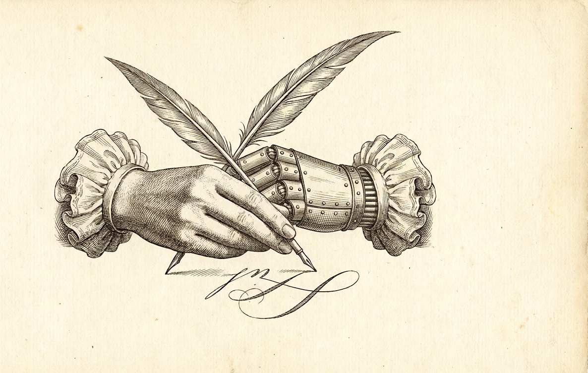
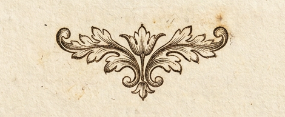
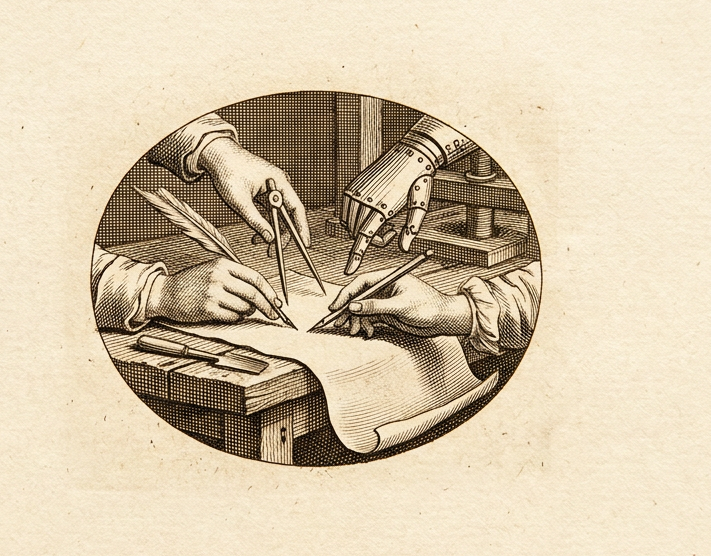

A laboratory for the study of human – agent collaboration

The agents are here. The instruments are not.
Machines now do most of the drafting. What remains scarce is the apparatus a person needs to think, decide, and review at that pace — so we are building it, and studying what it teaches us.

Lines of Inquiry
Three questions, pursued on real work rather than benchmarks.
Plate I — The reviewing surface
Where should a person stand when the machine holds the pen?
When drafting is cheap, judgment becomes the work. We ask what the best possible surface looks like for a person to think, decide, and review — an instrument for reading at the speed of writing.
Plate II — Judgment, engraved
Every correction is a cut the author leaves in the plate.
Each edit, comment, acceptance, and reversal is a trace of human judgment. We study how a model can learn a particular person’s judgment from the collaboration itself — personalization, and reinforcement on real work.

Plate III — Many hands, one sheet
A crowded page must still answer to its author.
Many people and many agents will share single artifacts. We ask how attribution, review, and control survive when the number of hands multiplies and the pace becomes mechanical.
A Catalogue of Instruments
The laboratory publishes its findings as working instruments. The first is in use.